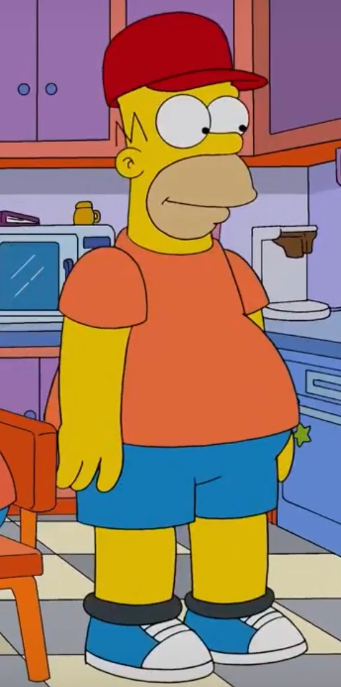

The Simsonis an American animated sitcom created by Matt Groening for the Fox Broadcasting
Company.[1][2][3]
The series is a satirical depiction of American life, epitomized by the Simpson family,
which consists of Homer, Marge, Bart, Lisa, and Maggie.
The show is set in the fictional town of Springfield
and parodies American culture and society, television, and the human condition.
Homer

Homer Jay Simpson (born May 12, 1956)[36] is the main protagonist of The Simpsons series (or show).
He is the spouse
of Marge Simpson and father of Bart, Lisa and Maggie Simpson.
Homer is overweight (said to be ~240 pounds), lazy,
and often ignorant to the world around him.
Although Homer has many flaws, he has shown to have great caring, love,
and even bravery to those he cares about and, sometimes, even others he doesn't.
He also serves as the main
protagonist of the The Simpsons Movie.

Lisa Marie Simpson (born May 9)[9] is the elder daughter and middle child of the Simpson family and one of the two tritagonists (along with Marge,) of The Simpsons series.